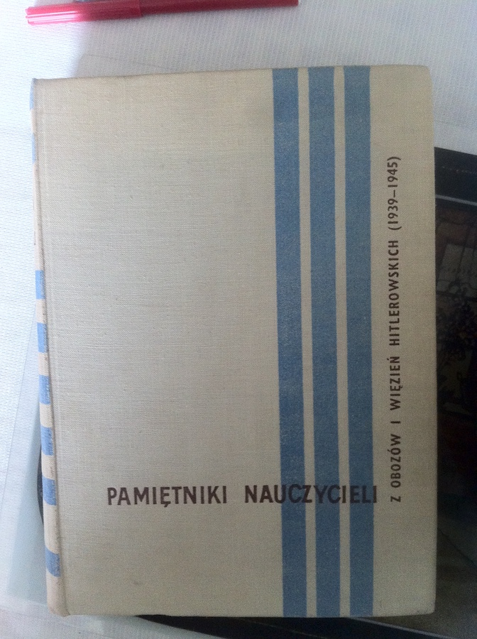
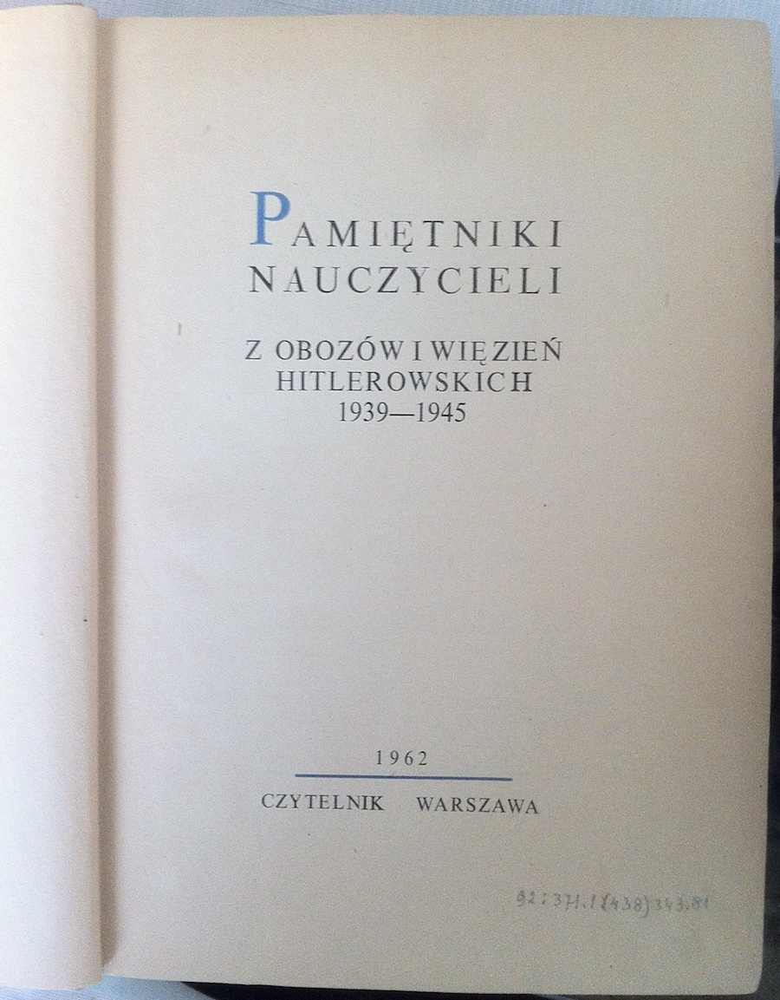

Escape
Stanisław Czernicki
Chapter 1 Introduction
This document is dedicated to my uncle Stanisław Czernicki.Figure 1.1: Dyrektor Stanislaw Czernicki.
Once, I stumbled upon a Polish book in someone’s bookcase: ‘Stories from teachers’. The first chapter was written by Stanisław. He is the brother of my grand-mother. I never got to know him in person, but I heard stories about him. This story tells about his escape from the concentration camp. This project is to translate the story from Polish to English, and to do a background research on the mentioned names.
- Robert-Jan ten Hove -

Figure 1.2: Teachers memories.

Figure 1.3: from Hitlers prisoners and concentration camps.